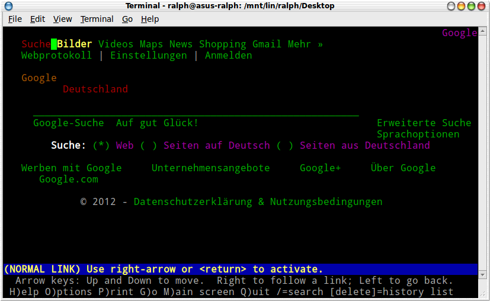
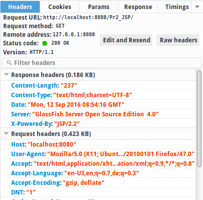
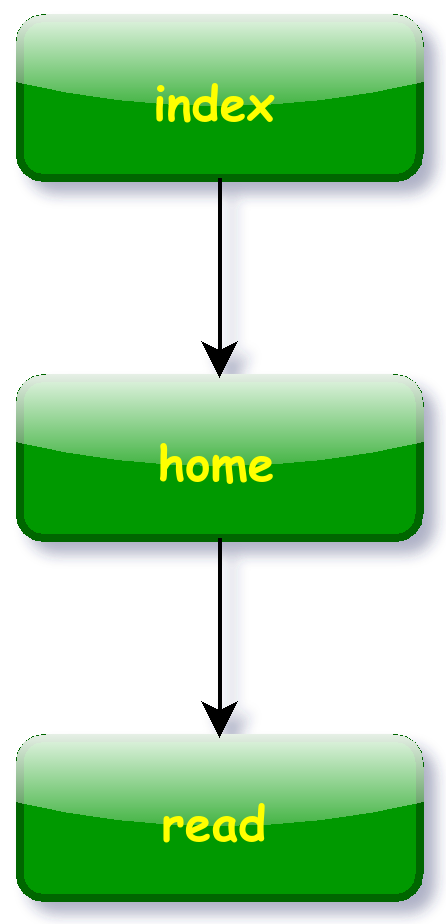
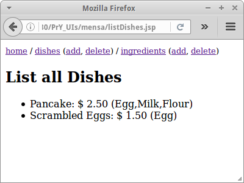

Basics
Am Anfang war HTML, und damit hat das Web seinen Siegeszug begonnen. Ursprünglich war HTML auch ganz einfach. Und darauf wollen wir uns auch beschränken, auf die einfachen Seiten von HTML. Nach einer kurzen Einführung in HTML, vor allem Links und Forms, werden wir kurz HTTP und TCP/IP erwähnen und CSS und JavaScript ansprechen. Danach kommen dann ganz viele Beispiele an denen wir unsere HTML Kenntnisse vertiefen können.
.
Browser
Bevor wir uns aber mit HTML näher beschäftigen, wollen wir erst mal den Webbrowser kennen lernen. HTML ist zwar so einfach, dass man es in jedem beliebigen Editor ansehen kann, aber eigentlich ist es dafür gedacht mit einem Browser betrachtet zu werden. Vergleichen wir wie eine HTML Seite im Editor aussieht, damit wie sie in einem Browser aussieht:
|
|
|
Es ist ziemlich offensichtlich, warum wir Browser verwenden wenn wir im Netz surfen und keine Editoren!
Die Erfindung von HTML geht einher mit der Erfindung des Browsers, und an beiden war Sir Tim Berners-Lee maßgeblich beteiligt. Browser gibt es inzwischen wie Sand am Meer, wie z.B. Mozilla's Firefox, Google's Chrome, aber auch text-basierte Browser wie etwa Lynx [6]:
|
|
 |
Als Entwickler von Webseiten sollten wir darauf achten, dass unsere Seiten mit allen Browsern funktionieren. Speziell text-basierte Browser werden aber leider sehr häufig vernachlässigt. Das ist sehr Schade, denn vor allem blinde Personen sind auf text-basierte Browser angewiesen, da diese in der Regel auch über Text-to-Speech die Inhalte vorlesen können.
SEP: Alle unsere Webseiten sollten auch mit einem text-basierten Browser funktionieren, und man sollte seine Webapplikationen immer mit verschiedenen Browsern testen.
.
Markup
HTML steht für "HyperText Markup Language". Es handelt sich bei HTML also um eine Auszeichnungssprache, im Gegensatz zu Programmiersprachen, beispielsweise. Eine Auszeichnungssprache beschreibt ein Dokument. Zum Beispiel gibt es bei einem Buch einen Titel, einen Autor, eine Inhaltsangabe, eine Kapitelüberschrift, und natürlich auch Text, der meist in Paragraphen unterteilt ist. Eine Auszeichnungssprache für ein Buch, könnte also wie folgt aussehen:
<book> <title>Internetprogrammierung</title> <autor>Ralph P. Lano</autor> <chapter name="Basics"> <paragraph> Am Anfang war HTML, ... </paragraph> ... </chapter> ... </book>
Dabei erkennen wir auch schon die wichtigsten Merkmale von Auszeichnungssprachen:
- es gibt sogenannte "Tags" die characteristisch für die jeweilige Auszeichnungssprache sind, wie z.B. <book>, <title>, etc.
- Tags kommen in der Regel paarweise, also auf ein <title> sollte später ein </title> folgen,
- und Tags sind verschachtelt, geben einem Dokument also eine gewisse Struktur.
.
HTML Markup
HTML ist die Auszeichnungssprache die Webseiten beschreibt. Es gibt über hundert verschiedene Tags, für unsere Zwecke sind aber nur ein paar davon wirklich wichtig. Jede HTML Seite beginnt mit einem <html> Tag, welches wiederum ein <head> und ein <body> Tag beinhalten kann:
<html> <head> <title>Title of Page</title> </head> <body> <h1>Hello Html!</h1> <p>Simple text goes inside <p> tags.</p> <ul> <li>this is list item 1</li> <li>this is list item 2</li> </ul> </body> </html>
Der eigentliche Inhalt der Seite befindet sich innerhalb des <body> Tags, beschreibende Information befindet sich im <head> Tag.
SEP: Tags sollten immer geschlossen werden, also für jedes Start-tag sollte es ein End-tag geben.
.
Links
Was einen Browser von einem Editor unterscheidet sind nicht die Bilder, denn ein Textverarbeitungsprogramm wie OpenOffice kann das auch. Es sind die Links, also die Verbindung zwischen zwei Seiten. Ein Link, auch Hyperlink genannt, ist effektiv die Adresse eines Dokuments im Internet. Dieses Dokument kann eine Text oder HTML Datei sein, es kann aber auch ein Bild, eine MP3 Datei oder ein Film sein. Das HTML Tag für einen Link ist das <a> Tag:
<html>
<body>
<h1>Links</h1>
This is an example of a simple
<a href="forms.html">link</a>
to another page.
</body>
</html>
Hier wird die Seite "links.html" mit der Seite "forms.html" verlinkt. Klickt der Benutzer auf den Link wird die Seite"forms.html" im Browser geöffnet.
Man unterscheidet zwischen "relativen" Links, also Links die auf dem selben Server gehostet werden und "absoluten" Links, also einer festen Adresse im Internet.
SEP: Man sollte wenn möglich immer relative Links verwenden.
.
Forms
Das zweite was einen Browser ausmacht sind die Formulare. Mit Formularen kann man den Benutzer bitten Daten einzugeben, die dann ausgewertet werden können. In HTML benutzen wir dafür das <form> Tag:
<html> <body> <h1>Forms</h1> <form action="index.html" method="GET"> UserID: <input type="text" name="userId"/> <br/> Password: <input type="password" name="password"/> <br/> <input type="submit" value="Login"/> </form> </body> </html>
Dabei ist "index.html" die Seite an die die Daten geschickt werden. Je nach Daten die man schicken möchte, gibt es verschiedene <input> Tags. Die folgenden Tags sind für uns die wichtigsten Tags:
<input type="text" name="lastname" value="Merkel" size="30" maxlength="50"> <input type="password"> <input type="checkbox" checked="checked"> <input type="radio" checked="checked"> <input type="submit"> <input type="reset"> <input type="hidden"> <textarea name="Comment" rows="60" cols="20"></textarea> <select> <option>Audi <option selected>BMW <option>VW </select>
Es gibt aber noch ein paar aus der HTML5 Ecke die ganz nützlich sein können.
.
Eine interessante Anwendung für das Form-Tag ist die Suche. Wir können eine Suche bei Google in unseren Webseite mit einbauen.
<html> <body> <h1>Google</h1> <form action="http://www.google.com/search" method="GET"> Query: <input type="text" name="q"/> <input type="submit" value="Search Google"/> </form> </body> </html>
.
Meta Tags
Meta Tags gehören zum Kopf Bereich einer HTML Seite. Sie geben zum Einen beschreibende Informationen zur Seite, wie z.B. description, keywords, author und robots Tag, die vor allem für Suchmaschinen interessant sein sollten. Allerdings, werden sie häufig von selbigen ignoriert.
<html>
<head>
<title>Meta Tags</title>
<meta name="description"
content="Here you can place a short description
of your pages content."/>
<meta name="keywords"
content="comma separated list of keyword,
might be ignored by search engines, html, meta tag"/>
<meta name="author" content="Ralph P. Lano"/>
<meta charset="UTF-8"/>
<meta name="robots" content="noindex, nofollow"/>
<meta http-equiv="refresh" content="10; url=index.html" />
</head>
...
</html>
Interessant ist allerdings das "refresh" Tag. In dem Beispiel oben besagt es, dass nach 10 Sekunden die Seite "index.html" geladen werden soll. Wir werden gleich mehrere Beispiele sehen wo das nützlich ist.
.
 HTTP
HTTP
Das Internet basiert auf dem HTTP Protokoll, ohne würde nichts gehen. Wenn wir im Browser "www.google.de" eingeben, dann sendet der Browser einen HTTP Request an den Google Server. Der Server antwortet dann mit einer HTTP Response und liefert in der Regel das was der Browser wollte.e.
Im HTTP Request sagt der Browser was er will, er enthält also Informationen über das gewünschte Dokument, oder allgemeiner die gewünschte Resource. Der Request enthält aber noch zusätzliche Informationen, wie z.B. die Sprache die der Nutzer spricht, welchen Browser und Betriebssystem er verwendet, die IP Adresse des Computers von dem der Request geschickt wurde, aber auch Cookies und u.U. auch Formulardaten, falls der Nutzer ein Formular ausgefüllt hat.
Die HTTP Response enthält natürlich das gewünschte Dokument. Das ist im sogenannten HTTP Body. Der HTTP Header enthält zusätzliche Informationen, wie z.B. den HTTP Status Code, die IP Adresse des Servers, den Datum, Cookies, und Informationen über das Dokument, dessen Typ (Content-Type) und dessen Grösse (Content-Length).
Der Browser sendet immer als erstes einen Request und der Server antwortet mit der Response. Es geht nie umgekehrt. Sendet der Browser nix, antwortet der Server auch nicht. Das ist ganz zentral.
TODO: image of HTTP handshake between client and server
Das HTTP Protokoll gibt es in zwei Versionen, und zwar unverschlüsselt (http) und verschlüsselt (https). Wir werden später noch ein bischen mehr zur verschlüsselten Version hören.
.
TCP/IP
Wie weiß denn der Browser wo der Server überhaupt ist? Wenn wir im Browser "www.google.de" eintippen, dann ist das in etwas so wie wenn ich sage: "ruf mal den Ralph an". Wir müssen natürlich die Telefonnummer von Ralph wissen, und genau das sind IP Adressen im Internet. Und so wie es für Telefonnummern ein Telefonbuch gibt, so gibt es für IP Adressen den Domain Name Service (DNS). Der Browser fragt also den DNS, "Hey was ist denn die IP Adresse von Google?". Und der DNS sagt ihm dann, dass die IP Adresse von Google "216.58.213.227" ist. Wir können im Browser auch "216.58.213.227" anstelle von "www.google.de" eingeben, das ist dem Browser sogar lieber, weil es ihm Arbeit spart.
Eine Sache noch, und das sind die Ports. Wenn wir so mit dem Browser unterwegs sind, dann verwendet der zusätzlich zur IP (damit findet er den Server) auch noch den Port, genauer den TCP-Port. Normalerweise verwendet HTTP den Port 80, und wenn wir diesen Port verwenden, müssen wir auch nichts sagen. Der Browser denkt sich einfach, "oh der Typ hat nix gesagt, also muss er wohl Port 80 meinen". Wenn der Typ aber den Port angibt, wie z.B. "http://localhost:8080", dann ist die Zahl hinter dem Doppelpunkt, also die "8080" der Port. Insgesamt gibt es etwas über 65000 Ports. Das hört sich jetzt nach viel an, ist es aber nicht. Denn im Internet gibt es viele Nutzer. Und die Zahl 65000 heißt, dass wir maximal 65000 Nutzer gleichzeitig an unserem Server haben können. Und für Websites wie Amazon oder Facebook ist das ein Problem. Deswegen haben die auch so viele Server.
.
CSS
HTML beschreibt was dargestellt werden soll, CSS beschreibt wie es dargestellt werden soll. Ein einfaches Beispiel soll zeigen wie wir z.B. Überschriften in blau erscheinen lassen:
<html>
<head>
<style type="text/css">
h1 {
color: blue;
}
</style>
</head>
...
</html>
Cascading Style Sheets (CSS) sind allerdings nicht Gegenstand dieses Buches, dafür gibt es bereits genügend andere gute Bücher.
.
JavaScript
Auch für JavaScript gibt es bereits eine Menge anderer guter Bücher. Hier wollen wir nur kurz zeigen, wie man JavaScript in HTML einbettet:
<html>
<body>
<script type="text/javascript">
alert("Hello JavaScript!");
</script>
</body>
</html>
Ansonsten werden wir JavaScript in diesem Buch nur sehr selten verwenden. Aber im Anhang finden sich noch ein paar Zeilen zu JavaScript.
.
Review
Was haben wir in diesem Kapitel gelernt? Wir haben gelernt
- dass es verschiedene Browser gibt
- wie Links und Forms funktionieren
- wofür Meta Tags gut sind
- und kurz gehört was HTTP ist und was eine HTTP Request und die entsprechende HTTP Response ist
- uns was es mit TCP/IP auf sich hat.
Dass es CSS gibt und auch JavaScript wurde zwar erwähnt, mehr aber auch nicht.
.
Projekte
Mit den Projekten wollen wir unsere HTML Kenntnisse an Beispielen vertiefen. Alle Beispiele die wir hier behandeln, werden wir später im Buch wiedersehen, deswegen sollten wir so viele wie möglich versuchen umzusetzen. Es kommt hier nicht darauf an, dass die Seiten super hübsch oder genauso wie angedeutet aussehen, es geht vor allem um die Funktionalität.
Die Anforderungen für jedes Projekt werden kurz beschrieben, begleitet von einem UseCase Diagramm und einer Liste der zentralen UseCases. Daraus ergibt sich dann die Seitenstruktur der Webanwendung. Das mag am Anfang nicht sofort nachvollziehbar sein, wird aber mit der Zeit ganz logisch erscheinen. Es folgen dann Screenshots oder auch Mockups der jeweiligen Seiten. Diese sollen dann in HTML umgesetzt werden. Das ist das Ziel.
Obwohl es sich im Moment noch um reine HTML Seiten handelt und sie deshalb ja eigentlich auf ".html" enden müssten, werden wir die Seiten gleich mit ".jsp" enden lassen, da wir in späteren Kapiteln daraus ja JSP Seiten machen werden, und wir sparen uns dann viel Umbenennarbeit.
Falls wir einen kleinen HTML Auffrischer benötigen, dann sind die Tutorials der Website W3Schools [1] sehr hilfreich.
.
Messenger
Bei Messanger handelt es sich um eine kleine Anwendung in der sich verschiedene Nutzer Messages senden können, ähnlich wie Email. Es gibt eine Login Seite, auf der man sich einfach mit einem Alias anmeldet. Von dort gelangt man auf die Home Seite. Die erlaubt es einem Messages an andere Nutzer zu senden und hat einen Link auf die Read Seite mit der man seine Messages lesen kann. Zusammengefasst also:
- sich mit einem Alias beim Messenger einloggen
- eine Message schreiben und versenden
- eigene Messages lesen.
Daraus ergibt sich folgende einfache Seitenstruktur:

Was die Mockups angeht, könnten die wie folgt aussehen:
|
|
|
|


Die erste Seite, index.jsp, enthält ein einfaches Formular mit einem Textfeld mit dem Namen "alias" und einen Submit Knopf. Das Ziel des Formulars soll home.jsp sein.
Auf der Seite home.jsp soll es einen Link zur Seite read.jsp geben. Ausserdem soll das Formular der Seite aus einer 2 mal 40 grossen Textarea bestehen, einem Hidden Feld, einem Select Tag und einem Submit Knopf. Das Ziel des Formulars soll auch home.jsp sein.
<input type="hidden" name="senderId" value="ralph"/>
...
<select name="receiverId">
<option value='ralph'>ralph</option>
<option value='vince'>vince</option>
</select>
Die Seite read.jsp soll einen Link zurück zur Seite home.jsp haben, und ein paar Beispiel Messages als Aufzählungsliste (bulleted list).
.
 TwoPlayer Chat
TwoPlayer Chat
Ein sehr interessantes Problem ist ein Chat zwischen zwei Personen. Wir wollen uns hier mit dem Fall beschäftigen in dem sich die zwei Personen nicht kennen. Das mag jetzt für einen Chat etwas ungewöhnlich sein, aber für Spiele in denen zwei zufällige Spieler gegeneinander spielen wollen, ist es nicht so ungewöhnlich, dieser Fall tritt sogar bei sehr vielen Spielen im Netz auf. Die UseCases sind die folgenden:
- den Chat beginnen, evtl auf einen Partner warten
- Chat Messages schreiben
- Chat Messages ansehen
- den Chat verlassen.
Daraus ergibt sich folgende Seitenstruktur:

Was die Mockups angeht, könnten die wie folgt aussehen:
|
|
|
Die erste Seite von TwoPlayer soll einfach aus etwas Text und einem Link zu Seite chat.jsp bestehen. Zusätzlich soll im <head> Teil der Seite ein Meta-Refresh Tag sein:
<head> <meta http-equiv="refresh" content="5" /> </head>
Die Seite chat.jsp hat zum einen ein Formular mit eine Textfeld namens "msg", einen Submit Knopf, und das Ziel des Formulars soll chat.jsp sein. Des weiteren soll es einen Link "Reset" geben der zur Seite home.jsp führt. Ausserdem soll es auf der Seite einen iFrame geben:
<iframe src="conversation.jsp" height="100"></iframe>
iFrames sind sozusagen Webseiten innerhalb von Webseiten, manchmal total praktisch, sollten aber nicht zu oft verwendet werden.
Schliesslich benötigen wir noch die Seite conversation.jsp. Das ist eine ganz einfache HTML Seite mit ein bischen Text, aber auch diese Seite sollte ein Meta-Refresh Tag haben, genauso wie die Seite index.jsp.
.
Navigation
Alle der nachfolgenden Webseiten haben eine Navigationszeile. Navigationszeilen gibt es in vielen verschiedenen Formen, aber gemeinsam ist ihnen allen, dass sie immer gleich sind. Wie wir ja schon im ersten Semester gehört haben, sind Programmierer relativ faule Leute und wenn möglich vermeidet man doppelten Code. Wir definieren also eine navigation.jsp Seite:
<small> <a href="login.jsp">login</a> / <a href="logout.jsp">logout</a> / <a href="protected.jsp">protected</a> </small>
und wollen, dass alle unsere Webseiten diese Navigationszeile enthalten. Das macht man mit einer "include directive":
<html>
<body>
<%@include file="navigation.jsp" %>
<h1>Login</h1>
...
</body>
</html>
Genau verstehen müssen wir das noch nicht, aber es ist super-praktisch.
SEP: Wir sollten doppelten Code vermeiden.
.
 Wiki
Wiki
Wir alle kennen die Wikipedia. Und man denkt, dass das eine super-komplizierte Webanwendung sein muss. Interessant ist, dass wir sehr bald schon in der Lage sind ein kleines Wiki selbst zu schreiben, also sozusagen "Wikipedia 0.1".
Unsere Anforderungen an unser Wiki sind folgende: Wir möchten zum einen ganz normal in unserem Wiki browsen und navigieren können, also Links folgen. Wir möchten jede beliebige Seite editieren können. Wir möchten auch neue Seiten anlegen können, in dem wir wie in Wikis üblich, einfach einen neuen Link zu einer noch nicht existierenden Seite einfügen, und das System dann beim ersten Aufruf diese Seite erzeugt. Schliesslich, möchten wir alle Seiten in unserem Wiki auflisten können, und natürlich möchten wir unser Wiki auch durchsuchen können.
Wenn wir das kurz zusammenfassen ergeben sich folgende UseCases:
- durch das Wiki browsen
- alle Wiki Seiten auflisten
- neue Seiten erstellen
- nach Schlagwörtern suchen
Daraus ergibt sich folgende Seitenstruktur:
Was die Mockups angeht, könnten die wie folgt aussehen:
|
|
|
|
|
Die Seiten sind eigentlich trivial, das Einzige ist, dass wir in jeder Seite die Include Directive nicht vergessen:
<html>
<body>
<%@include file="navigation.jsp" %>
<h1>Login</h1>
...
</body>
</html>
Der Link "help" auf der index.jsp Seite, führt wieder zurück zur index.jsp Seite (macht noch nicht viel Sinn, kommt später). Das Gleiche gilt für die Links auf der Seite all.jsp.
Das Ziel des Formulars auf search.jsp ist auch wieder index.jsp. Neben dem Submit Knopf, soll es ein Inputfeld mit dem Namen "searchTerm" geben und ein Hidden-Tag mit dem Namen "search". Wert braucht das Hidden-Tag keinen.
Auf der Seite edit.jsp gibt es wieder ein Formular mit einer 10 mal 50 grossen TextArea, sowie zwei Hidden-Tags, eines mit Namen "page" und Wert "home" und ein zweites mit Namen "edit". Das Ziel des Formulars soll eine Seite "wikiLogic.jsp" sein, in die wir einfach folgenden Text reinschreiben:
Not yet implemented.
(Also einfach Text, kein HTML)
.
 Mensa
Mensa
Aus dem ersten Semester stammt das Mensa Beispiel. Damals haben wir es verwendet um die Objektorientierte Analyse zu üben. Jetzt werden wir das Beispiel als Webanwendung umsetzen. Erinnern wir uns an die Anforderungen:
Die Mensa hat Gerichte und Zutaten. Ein Gericht hat einen Namen, einen Preis und eine Liste von Zutaten. Eine Zutat hat einen Namen, einen Preis und Kalorien. Es können alle Gerichte anzeigen, neue Gerichte angelegen, sowie existierende Gerichte löschen. Wir können alle Zutaten auflisten, die zu einem Gericht gehören. Wir können neue Zutaten anlegen und wir können existierende Zutaten löschen, sowie alle Zutaten auflisten.
Wenn wir das zusammenfassen, speziell im Hinblick auf die Webseiten die wir benötigen, ergeben sich folgende UseCases:
- erste Seite mit heutigem Menu: index.jsp
- alle Gerichte anzeigen
- neues Gericht hinzufügen
- bestehendes Gericht löschen
- alle Zutaten auflisten
- neue Zutaten hinzufügen
- bestehende Zutat löschen
Daraus ergibt sich folgende Seitenstruktur:
Was die Mockups angeht, könnten die wie folgt aussehen:
|
|
 |
|
.
|
|
|
|
|
Mit der Übung die wir jetzt schon haben, sollten die Seiten ein Klacks sein. Die Ziele der jeweilgen Formulare ergeben sich aus der Seitenstruktur. Auch, alle Seiten haben wieder eine Navigationszeile. Was evtl. neu ist, sind die Checkboxes, z.B. für die addDish.jsp Seite würde das so aussehen:
<input type='checkbox' name='ingredient' value='Egg'/>Egg <input type='checkbox' name='ingredient' value='Butter'/>Butter <input type='checkbox' name='ingredient' value='Milk'/>Milk <input type='checkbox' name='ingredient' value='Flour'/>Flour
Alle Formulare sollten als Ziel die Seite index.jsp haben. Und jedes Formular sollte noch ein Hidden-Tag beinhalten
<input type="hidden" name="addDish"/>
mit dem Namen der Seite in der es sich befindet.
.
 Login
Login
Für fast jede Webanwendung gibt es einen Login. Es gibt also einen öffentlichen und einen geschützten Bereich. Wir wollen das in einem einfachen Beispiel durchspielen. Unsere Login Anwendung soll folgende Anforderungen erfüllen:
- öffentliche Seiten: index.jsp, terms.jsp
- eine geschützte Seite: protected.jsp
- man soll sich einloggen können: login.jsp
- man soll sich ausloggen können: logout.jsp
- man soll sich registrieren können: register.jsp
- Passwort ändern können: changePassword.jsp
- Passwort vergessen dürfen: forgotPassword.jsp
Das sind so in etwas die Seiten die die meisten Websites bieten rund um das Login.
Daraus ergibt sich folgende Seitenstruktur:
Was die Mockups angeht, könnten die wie folgt aussehen:
|
|
|
|
|
.
|
|
|
|
|
Alle Seiten haben wieder eine gemeinsame Navigationsleiste. Die Seiten home.jsp, protected.jsp und tems.jsp sind absolut trivial.
Die Seiten logout.jsp und verifyEmail.jsp bestehen einfach aus einem
Not yet implemented.
Die Seite login.jsp besteht aus einem Formular mit einem Textfeld mit Namen "emailId" und einem Passwortfeld mit Namen "password", sowie einem Hidden-Tag namens "login". Das Ziel des Formular soll protected.jsp sein, und ganz wichtig die Methode sollte "POST" sein. Ausserdem soll es einen Link auf die Seite forgotPassword.jsp geben.
Die Seite forgotPassword.jsp besteht aus einem Formular mit zwei Textfeldern mit Namen "emailId" und "favoriteColor", sowie ein Hidden-Tag namens "forgotPassword". Das Ziel des Formular soll verifyEmail.jsp sein, und ganz wichtig ist wieder die Methode sollte "POST" sein.
Die Seite changePassword.jsp besteht aus einem Formular mit drei Passwortfelder mit den Namen "password", "newPassword1" und "newPassword2", sowie ein Hidden-Tag namens "changePassword". Das Ziel des Formular soll verifyEmail.jsp sein, und ganz wichtig ist wieder die Methode sollte "POST" sein.
Die Seite register.jsp besteht aus einem Formular mit drei Textfeldern mit Namen "emailId", "alias" und "favoriteColor", einem Passwortfeld mit Namen "password", sowie ein Hidden-Tag namens "registration". Ausserdem soll die Seite ein numerische Feld namens "sum" enthalten mit assozierten HiddenTag namens "result":
<input type="number" name="sum" size="4"/>
<input type="hidden" name="result" value="3"/>
Und wir benötigen noch eine Checkbox für die Terms and Conditions:
<input type="checkbox" name="acceptTerms"/>
Das Ziel des Formular soll protected.jsp sein, und ganz wichtig ist wieder die Methode sollte "POST" sein. Schliesslich soll es noch einen Link auf die Seite terms.jsp geben.
Wir haben es bisher vermieden CSS Stylesheets zu verwenden, aber hier macht es Sinn eine Ausnahme zu machen. Wir verwenden das folgende Stylesheet namens "style.css":
form { display: table; }
p { display: table-row; }
label { display: table-cell; white-space: nowrap; padding-right: 5px;}
input { display: table-cell; }
Darin werden Styles für die Tags form, p, label und input definiert. Alles was wir tun müssen, ist im Header jeder JSP Seite das Stylesheet einzubinden:
<head><link rel="stylesheet" type="text/css" href="style.css"></head>
und wenn wir unsere Formulare definieren auf folgende Struktur zu achten:
<form action="protected.jsp" method="POST"> <p> <label>Email:</label> <input type="text" name="emailId"/> </p> <p> <label>Password:</label> <input type="password" name="password"/> </p> ... </form>
Dann sehen die Formulare viel angenehmer aus.
.
 Chirpr
Chirpr
"Zwitschern" heißt auf Englisch "chirp", und darum geht es bei Chirpr: es handelt sich um ein Mini-Soziales-Netzwerk in dem man kurze Nachrichten (Chirps) mit maximal 42 Zeichen posten kann. Man kann in seinen Nachrichten auch Tags verwenden, um diese einem gewissen Thema zuzuordnen. Das Ganze ist natürlich von einer relativ bekannten Webanwendung die mit Vögeln zu tun hat inspiriert.
Beginnen wir wieder mit unseren Anforderungen: Nutzer sollen
- sich identifizieren: login.jsp
- neue Chirps erstellen können: protected.jsp
- gewissen Tags folgen können: tags.jsp
- gewissen Birds folgen können: birds.jsp
- alle Chirps auflisten können: chirps.jsp
- sich ausloggen können: logout.jsp
Daraus ergibt sich folgende Seitenstruktur:
Was die Mockups angeht, könnten die wie folgt aussehen:
|
|
|
|
|
.
|
|
|
|
|
Hier gibt es nicht viel zu sagen, aus der Seitenstruktur ergeben sich die Links, und mit dem bisher gelernten sind die Seiten ganz einfach zu erstellen.
.
Challenges
Gegen Ende dieses Buches wollen wir auch eine etwas anspruchsvollere Webanwendung schreiben. Dafür können wir aber bereits jetzt die Vorarbeit leisten.
.
 Quizs
Quizs
Quizs ist eine Webanwendung mit der man anhand von Multiplechoice-Fragen sein Wissen überprüfen kann. Ausserdem kann man auch Prüfungen erstellen. Auch diese Anwendung ist bereits aus dem ersten Semester bekannt, damals haben wir Teile als Swing Anwendung programmiert aber natürlich ohne Datenbank.
Beginnen wir wieder mit unseren Anforderungen. Aus der Sicht eines Studierenden können wir
- uns identifizieren: login.jsp
- an einer Prüfung teilnehmen: exam.jsp
- die Resultate einsehen: results.jsp
- uns ausloggen: logout.jsp
Falls ein Studierender noch nicht exisitiert, wird einfach ein neuer angelegt.
Aus Sicht eines Lehrenden können wir
- uns identifizieren: login.jsp
- neue Fragen erstellen: question.jsp
- neue Prüfungen erstellen: exam.jsp
- alle Studierende auflisten: results.jsp
- uns ausloggen: logout.jsp
Lehrende soll es nur einen geben: den 'teacher'. Wenn sich also jemand mit der ID 'teacher' einlogged, hat er die teacher Privilegien. Es gibt also zwei verschiedene Nutzer-Typen in dieser Webanwendung.
Daraus ergibt sich folgende Seitenstruktur:
Was die Mockups angeht, könnten die wie folgt aussehen:
|
|
|
|
|
.
|
|
|
|
|
.
|
|
|
|
|
Auch hier gibt es nicht viel zu sagen, aus der Seitenstruktur ergeben sich die Links, und mit dem bisher gelernten sind die Seiten ganz einfach zu erstellen. Wir sollten auch darauf achten, dass alle Seiten für Studierende sich im Unterverzeichnis "/student/" befinden, und alle Seiten für Lehrende im Unterverzeichnis "/teacher/". Evtl. eine Anmerkung zur Seite takeExam.jsp: wie gruppiert man Radiobuttons? Das geht über den Namen:
What is 1 + 1?<br/> <input type='radio' name='0' value='1'/>1<br/> <input type='radio' name='0' value='2'/>2<br/> <input type='radio' name='0' value='3'/>4<br/> <hr/> Which color is the sky?<br/> <input type='radio' name='1' value='1'/>red<br/> <input type='radio' name='1' value='2'/>black<br/> <input type='radio' name='1' value='3'/>blue<br/> <hr/>
Radiobuttons mit dem gleichen Namen gehören zusammen.
.
Research
In diesem Kapitel haben wir uns auf das absolut Notwendige beschränkt. Es gibt aber natürlich noch viele andere Dinge die wir im Internet recherchieren können.
.
Browsers
Leider ist es nicht so, dass unsere Webseiten auf allen Browsern gleich aussehen, oder wenn wir sehr viel JavaScript oder ähnliches verwenden, überhaupt funktionieren. Deswegen muss man seine Webanwendung auf den verschiedenen Browser testen.
Es kommt häufig vor, dass unser Kunde verlangt, dass seine Seiten auf 90% aller Webbrowser laufen sollen. Um zu wissen was 90% bedeutet muss man natürlich erst einmal wissen welche Browser wie populär sind. Das letzte Mal als ich nachgesehen habe, war das folgende Popularität:
- Google Chrome (72%)
- Firefox (17%)
- Internet Explorer (5%)
- Safari (3%)
- Opera (1%)
In diesem Fall müssten wir unsere Anwendung also mindestens auf den ersten drei Browsern testen. Da sich diese Zahlen innerhalb von ein paar Monaten ändern, sollten wir jetzt mal recherchieren, wie denn die Verteilung heute aussieht: http://www.w3schools.com/browsers/default.asp. Auch zu beachten ist in wiefern unsere Anwendung auf mobilen Endgeräte laufen soll.
.
Markup Languages
HTML ist eine Markup Sprache. Markup Sprachen sollte man nicht mit Programmiersprachen verwechseln, denn das sind sie nicht. Neben HTML gibt es noch ganz viele, wichtig ist XML, interessant sind aber auch die Ursprünge SGML und GML. HTML5 ist was heute meistens verwendet wird, aber man findet auch noch ältere Version. Es macht Sinn sich im Internet mal zu den Hintergründen all dieser "ML" Sprachen zu erkundigen.
.
MIME
Die "Multipurpose Internet Mail Extensions", kurz MIME, sind extrem wichtig wenn wir irgendetwas im Internet machen. Die wichtigste ist wohl "text/html" oder "image/png", aber es gibt noch ganz viele andere. Auch hier ist das Internet eine gute Möglichkeit sich über MIME und die MIME Types einen Überblick zu verschaffen.
.
RFC 2616
RFC 2616 [2] ist die Spezifikation des HTTP Protokolls. Wir sollten uns die Spezifikation mal ansehen, nach bekannten Namen unter den Autoren suchen, und im Inhaltsverzeichnis mal nach Request und Response suchen, sowie identifizieren welche HTTP Methoden und welche HTTP Status Codes es gibt. Speziell, wenn wir im letzten Kapitel uns mit Webservices beschäftigen, wird diese RFC sehr wichtig werden.
.
CSS and JavaScript
Wir werden uns in diesem Buch nur ganz am Rande mit CSS und JavaScript beschäftigen. Beide sind aber relativ wichtig. Deswegen macht es durchaus Sinn sich hier ein paar Tutorials anzusehen. M.E. die besten gibt es bei W3Schools. Wenn man altmodisch ist kann man sich aber auch ein Buch kaufen, wie z.B. ’Bulletproof WebDesign’ von Dan Cederholm [3] oder 'JavaScript: The Definitive Guide' von David Flanagan [4].
.
HTML Editors
Wenn ich HTML schreibe, dann verwende ich meist einen einfachen Texteditor. Manchmal ist es aber praktisch eine WYSIWYG Editor zu verwenden. Da gibt es ganz viele verschiedene, auch einige mit einer Open Source Lizenz wie z.B. BlueGriffon [5]. Wenn man viel mit der Erstellung von Webseiten zu tun hat, macht es durchaus Sinn sich hier einen Überblick zu verschaffen, denn mit einem guten Tool lässt sich die eigene Produktivität locker verdoppeln.
.
Fragen
-
Wer war einer der Erfinder von HTML?
- Wer war einer der Erfinder von HTTP?
-
Nennen Sie die Namen von drei verschiedenen Browsern.
-
Erklären Sie den Unterschied zwischen URI, URL and URN.
-
Warum sollte man nur relative und keine absoluten Links verwenden?
-
Wofür sind Meta-Tags gut?
-
Was ist MIME und wofür wird es verwendet?
-
Schreiben Sie HTML Code, der es Ihnen erlaubt eine Wikipedia Suche in Ihre Webseiten zu integrieren. (Hinweis: wenn Sie nach “BMW” in Wikipedia suchen, so wird dies durch folgende URI bewerkstelligt: en.wikipedia.org/w/index.php?search=BMW).
-
Write an HTML page using the form tag, that when the user clicks on the submit button, performs a search on DMOZ, the open directory project. The query URL for DMOZ is: 'http://www.dmoz.org/search?q=xyz', where 'xyz' is the query the user entered.
-
Schreiben Sie eine HTML Seite die eine Suche in Google durchführt (die URI für eine Suche bei Google lautet: www.google.com/search?q=bmw)
-
Schreiben Sie HTML Code, der einen Benutzer nach Namen und Passwort fragt, und die eingegebenen Daten mittel POST Request and die Seite 'www.server.com/login.jsp' schickt.
-
Angenommen, Sie haben zwei Seiten, “1.html” und “2.html”. Wie müsste das Link-Tag aussehen, welches einem Link von Seite “1.html” auf Seite “2.html” setzt?
-
Skizzieren Sie wie die folgende Webseite aussieht.
<HTML> <HEAD> <TITLE>A dynamic JSP page</TITLE> </HEAD> <BODY> <FONT color="green" face="arial"> <CENTER>Hello World!</CENTER> <UL> <LI>Welcome to the J2EE MasterClass</LI> <LI>Today is Monday.</LI> </UL> </FONT> </BODY> </HTML>
.
Referenzen
Zu allen Themen die einem neu erscheinen, kann man erst mal in der Wikipedia nachschauen, um sich eine Überblick und ersten Eindruck zu verschaffen. Allerdings zwei Referenzen die für dieses Kapitel noch hilfreich sein könnten.
[1] W3Schools Online Web Tutorials, www.w3schools.com/
[2] RFC 2616, tools.ietf.org/html/rfc2616
[3] Bulletproof WebDesign von Dan Cederholm
[4] JavaScript: The Definitive Guide von David Flanagan
[5] BlueGriffon, bluegriffon.org
[6] Lynx, http://lynx.browser.org/
.